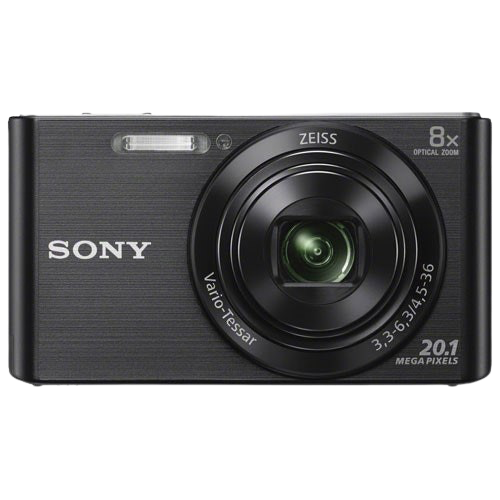

HOT PICK
Sony Cyber-shot W830
Sony
$199
A classic black Sony Cyber-shot digital camera with a clean Y2K look. Its compact body, simple controls, and sharp everyday photo mood make it a great pick for beginners, school memories, casual snapshots, and daily carry.
Product Details
- Condition: Pre-owned / Good
- Color: Classic Black
- Best for: Beginners, school days, and daily photos
- Style: Clean Y2K compact camera
- Stock: In Stock
Why You’ll Like It
- Small enough to carry every day
- Easy point-and-shoot controls
- Classic black design that matches any outfit
- Great for flash photos, casual portraits, and memory shots
Best For
- Students who want a simple daily camera
- First-time digital camera users
- People who like a clean, minimal camera style
- Everyday photos with a nostalgic digital mood
You May Also Like
More cute digital camera picks